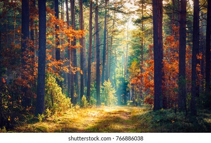

By discovering nature, You discover yourself... Maxime Lagacé

Forget not that the earth delights to feel your bare feet and the winds long to play with your hair. —Khalil Gibran

Look deep into nature, and then you will understand everything better. —Albert Einstein

To me a lush carpet of pine needles or spongy grass is more welcome than the most luxurious Persian rug. —Helen Keller